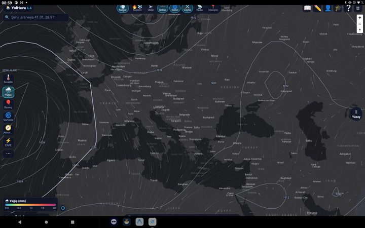
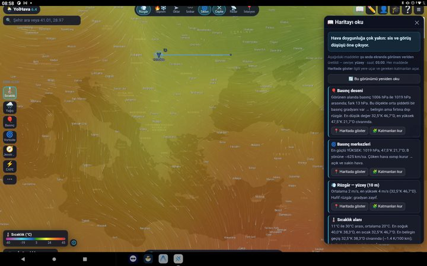
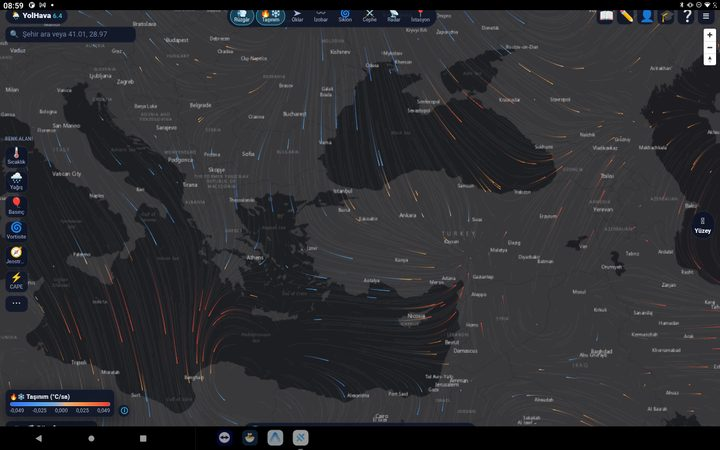
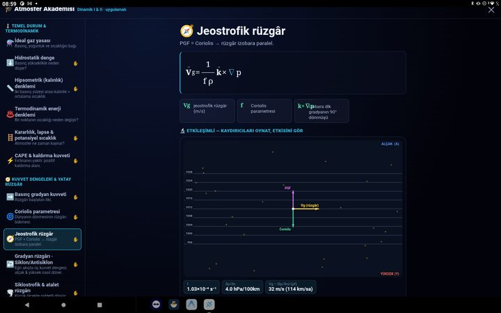
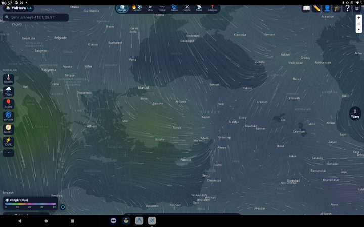
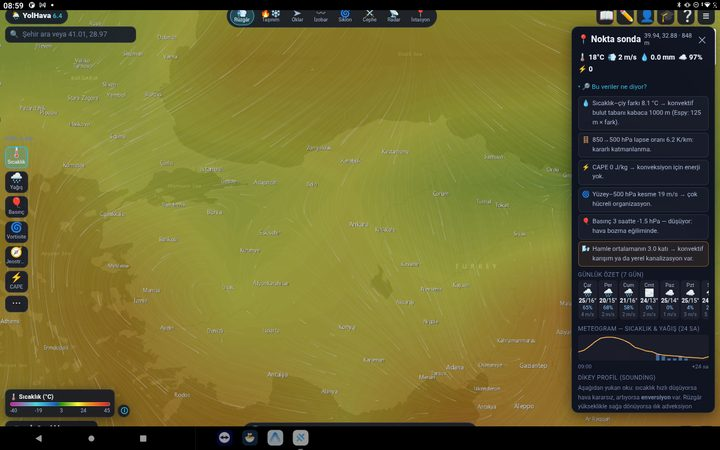
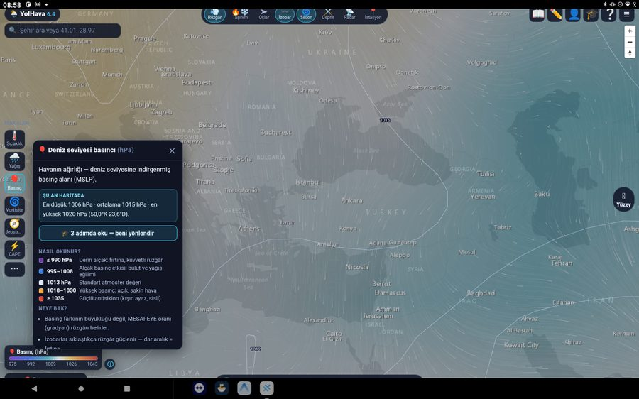
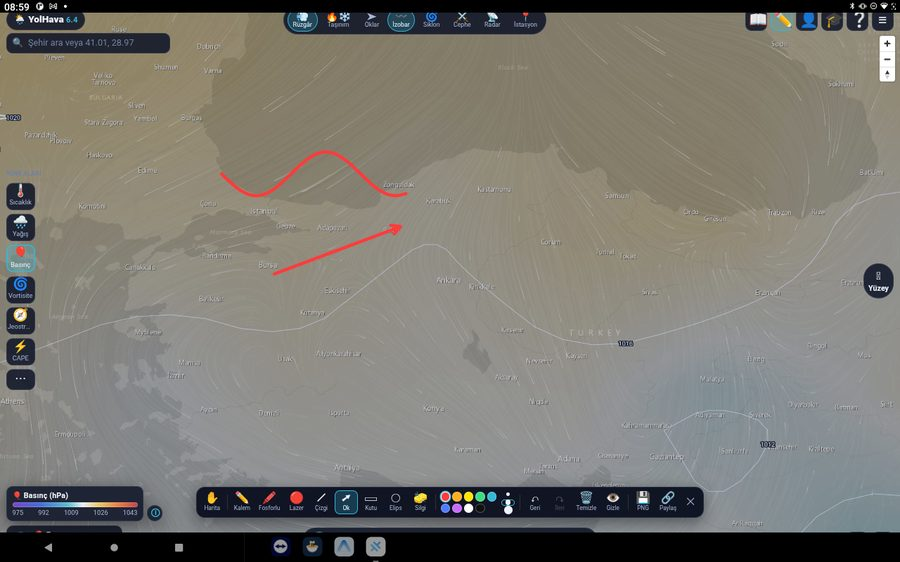
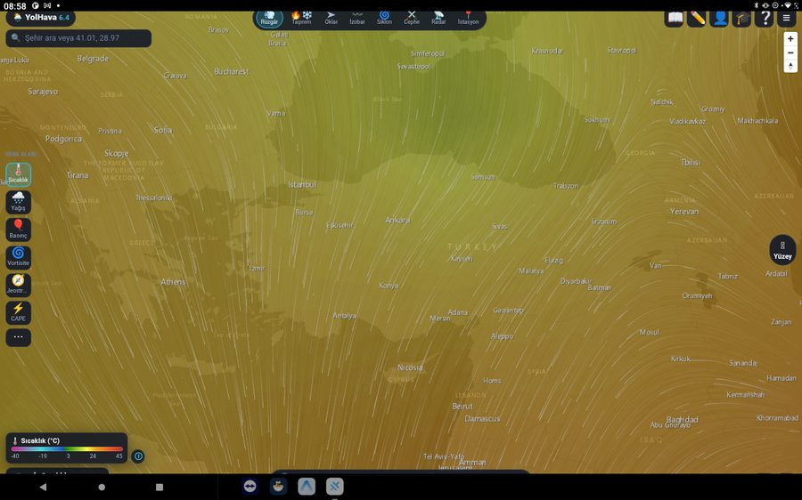

Neden böyle bir şeye ihtiyaç duydum
Hava durumu uygulamalarının hepsi aynı şeyi yapıyor: bir noktanın havasını gösteriyor. Ama yola çıkan biri için bu yanlış soruya verilmiş doğru cevap. Siz İstanbul'dan saat 11'de çıkıp Ankara'ya gidiyorsanız, İstanbul'un şu anki havası sizi ilgilendirmiyor; sizi ilgilendiren, saat 14 civarında Bolu'ya vardığınızda orada ne olacağı.
Bu, meteoroloji açısından bambaşka bir hesap. Tek konumun zaman serisi değil, rota boyunca bir zaman-mekân kesiti çıkarmanız gerekiyor: aracın konumu zamanla ilerlerken tahmin alanı da zamanla değişiyor. İkisini eşleştirmek lazım.
Bölümümde öğrendiğim şeyin tam olarak karşılığı olan bir problem bu. O yüzden yazmaya karar verdim.
Yolda ne oldu
Uygulama şu an 6.4 sürümünde. Bu, arada 15 sürüm çıkardığım anlamına geliyor ve her birinin sebebi bir şeyin çalışmamasıydı. Önemli kırılmaları yazdım:
-
Sürüm 2 · başlangıç
Önce sadece sinoptik harita yaptım
İlk hedefim basitti: basınç alanlarını ve cepheleri düzgün çizebilen bir harita. Rota hesabı yoktu. Bu sürüm bana veri kaynaklarının nasıl davrandığını öğretti — asıl işin çizim değil, veriyi zamanında ve tutarlı almak olduğunu burada gördüm.

Sinoptik katman — siklonlar ve cepheler. -
Duvar
Rota ile tahmin zamanını eşleştirmek
İlk rota denemesi yanlış sonuç veriyordu, çünkü yolun her noktası için aynı tahmin saatini kullanıyordum. Sürücü Bolu'ya 3 saat sonra varacaksa Bolu için 3 saat sonrasının tahminini okumak gerekiyor. Çözüm, rotayı mesafe değil süre üzerinden bölümlemek oldu: her parça kendi tahmin adımıyla eşleşiyor.
-
Duvar
Veriyi kullanıcının anlayacağı şeye çevirmek
Bir meteoroloji öğrencisine "18 mm/sa yağış, 850 hPa'da -2 °C" deyince bir şey ifade eder. Sürücüye etmez. Uzun süre burada takıldım. Sonunda her segmenti yeşil / sarı / kırmızı bir karara indirdim ve ham değerleri isteyen görebilsin diye arkaya koydum. Bilgiyi silmeden basitleştirmek gerekiyordu.

"Haritayı oku" — sembollerin anlamını açıklayan rehber. -
Sürüm 6.x
3B atmosfer görselleştirmesi
Küre üzerinde siklonları, cepheleri ve taşınım hareketini gösteren bir katman ekledim. Bu, uygulamayı "hava durumu" olmaktan çıkarıp atmosferin nasıl çalıştığını gösteren bir şeye dönüştürdü.

Taşınım katmanı — havanın dikey hareketi. -
Sürüm 7 · şu an
Öğreten katman
Şu an üzerinde çalıştığım şey: uygulamanın içine meteoroloji terimlerini, formüllerini ve bunların birbiriyle bağlantısını anlatan bir eğitim katmanı. Amaç, kullanıcı bir uyarı gördüğünde neden öyle olduğunu da okuyabilsin.

Akademi — sürüm 7'de gelen eğitim katmanı.
Uygulamadan görüntüler





Hangi noktadayım
| Ne | Durum |
|---|---|
| Web sürümü | Canlı ve herkese açık |
| Android sürümü | İmzalı paket hazır, bu sayfadan indirilebilir |
| Google Play | Yayında değil — sebebi aşağıda |
| Güncel sürüm | 6.4 |
| Geliştirici | Tek kişi (ben) |
Neden Play Store'da değil
Google Play geliştirici hesabı tek seferlik 25 dolar istiyor. Uygulamanın imzalı yayın paketi, mağaza metni, ekran görüntüleri, gizlilik politikası ve veri güvenliği formu — hepsi hazır ve bekliyor. Tek eksik bu ücret.
Bunu buraya yazmam biraz tuhaf geliyor ama en dürüst hâli bu: bölümümde öğrendiğimi çalışan bir ürüne çevirdim, ürünü yayınlayamıyorum. İçinde bulunduğum durumu en açık anlatan örnek de bu sanırım.
Bu arada aynı ücreti ödeyebildiğim tek bir uygulamam var — Naplist Google Play'de yayında. Yani süreci biliyorum; mesele bilgi değil.